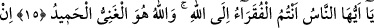
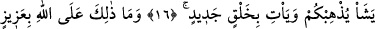
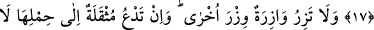
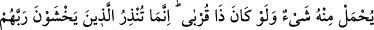
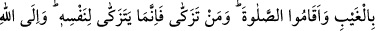
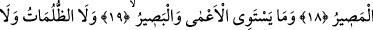
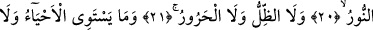
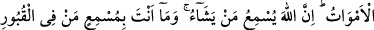
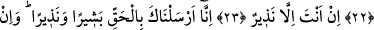
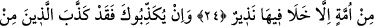
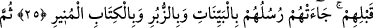
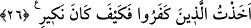
ALLAH’A MUHTAÇ OLAN
SİZSİNİZ
15. Ey insanlar! Allah’a muhtaç olan sizsiniz. Zengin ve övülmeye lâyık olan
ancak O’dur.
16. Allah dilerse sizi yok eder ve yerinize yeni bir halk getirir.
17. Bu da Allah’a güç bir şey değildir.
18. Hiçbir günahkâr başkasının günahını yüklenmez. Yükü (günahı) ağır gelen
kimse onu taşımak için (başkasını) çağırsa, bu çağırdığı akrabası da olsa, onun
yükünden bir şey yüklenmez. Sen ancak görmeden Rablerinden korkanları ve
namazı kılanları uyarabilirsin. Kim temizlenirse o, kendi menfaatine temizlenmiş
olur. Dönüş Allah’adır.
19, 20, 21. Körle gören, karanlıkla aydınlık, gölge ile sıcak bir olmaz.
22. Dirilerle ölüler de bir olmaz. Şüphesiz Allah, dilediğine işittirir. Sen
kabirlerdekilere işittiremezsin!
23. Sen sadece bir uyarıcısın.
24. Biz seni müjdeleyici ve uyarıcı olarak hak ile gönderdik. Her millet için
mutlaka bir uyarıcı (peygamber) bulunmuştur.